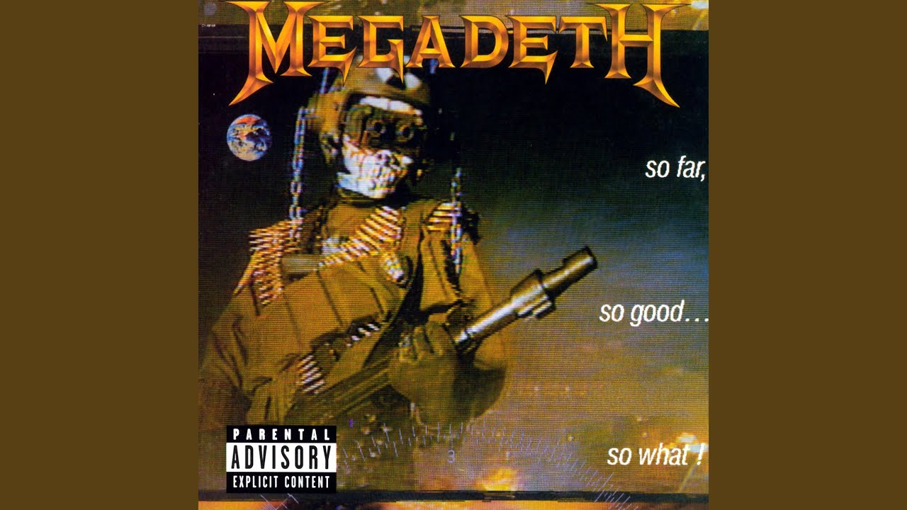

In my hour of need
Ha! No, you're not there
And though I reached out for you
Wouldn't lend a hand
Through the darkest hour
Your grace did not shine on me
It feels so cold, very cold
No one cares for me
Did you ever think I get lonely?
Did you ever think that I needed love?
Did you ever think to stop thinking?
You're the only one that I'm thinking of
You'll never know how hard I tried
To find my space and satisfy you too.
Things will be better when I'm dead and gone
Don't try to understand, knowing you I'm probably wrong.
But, oh, how I lived my life for you!
Still you'd turn away
Now as I die for you,
My flesh still crawls, as I breathe your name
All these years I thought I was wrong
Now I know it was you!
Raise you head, raise your face your eyes
Tell me, who do you think you are?
I walk, I walk alone
Into the promised land.
There's a better place for me
But it's far, far away
Everlasting life for me
In a perfect world
But I gotta die first,
Please, God, send me on my way!
Time has a way of taking time
Loneliness is not only felt by fools
Alone I call to ease the pain
Yearning to be held by you
Alone so alone, I'm lost
Consumed by the pain
The pain, the pain, the pain
Won't you hold me again?
And you just laughed, ha! Ha! Bitch!
My whole life is work built on the past
But the time has come when all things shall pass
This good thing passed away